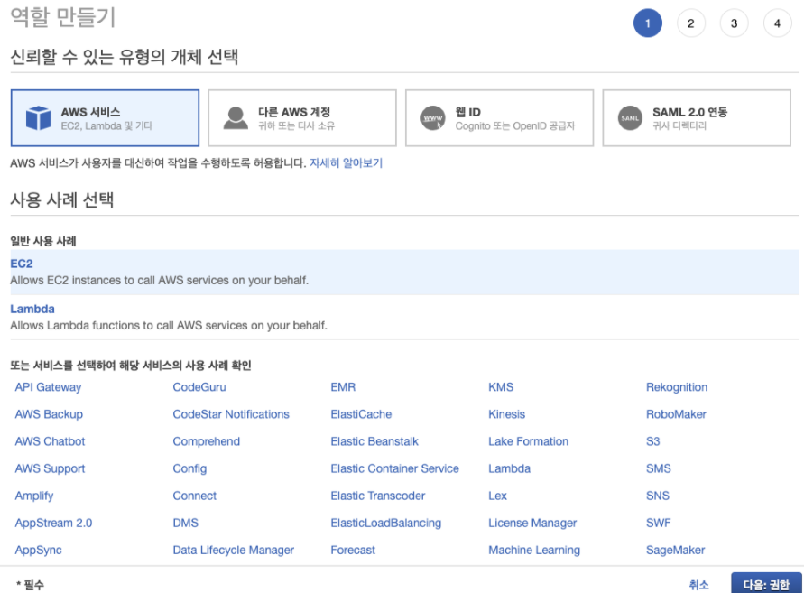

Fiesta IAM 구성
Fiesta 기능 사용을 위한 IAM 구성
독립실행형 FleetIQ 기능 사용을 위해서는 EC2 인스턴스 및 Auto Scaling 기능과 상호작용할 수 있는 제한된 권한을 부여해야합니다.
-
IAM 콘솔에 로그인합니다. (https://console.aws.amazon.com/iam)
-
IAM 정책 메뉴를 진입한 상태에서 Create Policy 을 선택합니다.
-
다음과 같이 JSON 형식으로 정책을 입력할 수 있도록 전환합니다.

정책의 내용은 다음과 같이 구성합니다.
{
"Version": "2012-10-17",
"Statement": [
{
"Effect": "Allow",
"Action": "ec2:TerminateInstances",
"Resource": "*",
"Condition": {
"StringEquals": {
"ec2:ResourceTag/GameLift": "GameServerGroups"
}
}
},
{
"Effect": "Allow",
"Action": [
"autoscaling:CompleteLifecycleAction",
"autoscaling:ResumeProcesses",
"autoscaling:EnterStandby",
"autoscaling:SetInstanceProtection",
"autoscaling:UpdateAutoScalingGroup",
"autoscaling:SuspendProcesses",
"autoscaling:DetachInstances"
],
"Resource": "*",
"Condition": {
"StringEquals": {
"aws:ResourceTag/GameLift": "GameServerGroups"
}
}
},
{
"Effect": "Allow",
"Action": [
"ec2:DescribeImages",
"ec2:DescribeInstances",
"autoscaling:DescribeAutoScalingGroups",
"ec2:DescribeLaunchTemplateVersions"
],
"Resource": "*"
},
{
"Effect": "Allow",
"Action": "sns:Publish",
"Resource": [
"arn:aws:sns:*:*:ActivatingLifecycleHookTopic-*",
"arn:aws:sns:*:*:TerminatingLifecycleHookTopic-*"
]
}
]
}
- 정책을 구성하고 이름을 FleetIQFiestaPolicy 로 지정합니다.

- 다음으로 정책을 사용할 IAM 역할을 생성해보도록 하겠습니다. 그림과 같이 EC2 사용 사례로 역할을 시작합니다.

- 권한 정책으로 좀 전에 만든 FleetIQFiestaPolicy 를 연결합니다.

- 만들어진 FleetIQFiestaRole 역할에 대해 신뢰 관계를 편집해야 합니다. 기존에는 ec2 기반의 신뢰 정책으로 구성되어있을 것입니다.

- 신뢰 관계를 다음과 같이 편집합니다.
{
"Version": "2012-10-17",
"Statement": [
{
"Effect": "Allow",
"Principal": {
"Service": [
"gamelift.amazonaws.com",
"autoscaling.amazonaws.com"
]
},
"Action": "sts:AssumeRole"
}
]
}
위의 Policy Document 는 GameLift 서비스 및 Auto Scaling 서비스로부터 권한을 위임할 수 있는 역할로 구성한다는 의미가 됩니다.
- Fiesta 관련 정책 및 역할 설정이 끝났으면, 다음 장에서는 FleetIQ 가 할당할 서버 인스턴스에 대한 설정을 해보겠습니다.